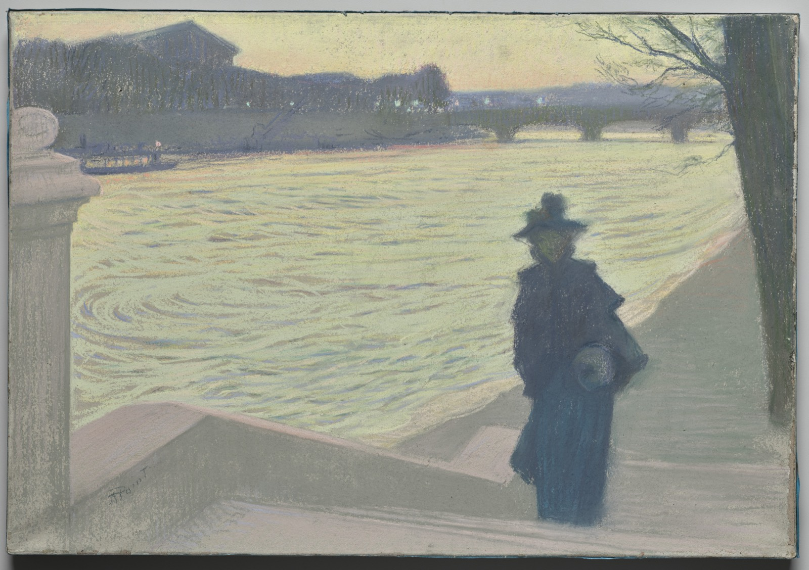

图：Armand Point 约 1890 年的《Quais de Seine en nocturne》（塞纳河河堤夜景）——入夜的河堤上，一个裹着深色外衣的女人独自站着；身后一座桥、几点昏灯，沉在烟灰色的天光里。
温哥华在很多华人心里，是一个几乎挑不出毛病的名字。全球宜居榜上的常客，雪山和海就贴在城市边上，冬天不冷，街道干净。多少人把孩子送到这里读书，把父母接过来养老，把攒了半辈子的钱换成这里的一套房子。它几乎就是"安稳"两个字的同义词。
可要是你这几年真的在那里走过几条街，你大概还知道另一件事。
你知道在它市中心的东边，有一片叫“东区”的街区——北美最集中的露天毒品市场之一：数以千计的成瘾者聚在这里，帐篷、针管和街头的毒品过量，是这里的日常。而这些年下来，这片街区的失序，也一点点漫到了外面。你知道那里的有些路段，天一擦黑就不要一个人走。你知道在某几个街口，最好别跟迎面来的人对上眼——低头看手机，脚步别停，绕过地上那个人，绕过那支针管，走过去就是了。你可能都没意识到，你已经学会了视而不见。一位当地居民在片子里说得很平淡——你就是慢慢习惯了，把这个当成“温哥华本来就得这样”。
而这部片子，讲的正是这种麻木。
早在 2022 年，就有人把这份麻木拍成了一部纪录片——导演 Aaron Gunn，片名叫《Vancouver is Dying》，"温哥华正在死去"。对一部加拿大独立纪录片来说，它的动静大得少见：上线才一个月，播放量就冲过了两百万，到今天累计四百多万。而它上线十天之后，正赶上那年的温哥华市长选举——一部片子，几乎成了那场选举都绕不开的话题。有人说它戳破了大家心照不宣、却不敢明讲的东西，也有人说它危言耸听，专挑最难看的一面拍。四年过去，这本该是一段可以翻篇的旧事。
可偏偏就在今年，它又成了现在进行时。10 月 17 日是温哥华四年一度的市选，要选出市长和市议会；同一天还会另发一张选票，上面有两道公众咨询题，其中一道问：赞不赞成本市加强法规，禁止在公共场所露天使用海洛因、冰毒、芬太尼、快克这类硬毒品。一个星期之后的 10 月 24 日，是卑诗省（不列颠哥伦比亚省）的省选。
如今重看这部片子，已经不只是回顾一段过去，也是在掂量一个可能重来的选择——它当年说中的那些，会不会又一次上演？
它要立的论点其实很简单：眼前这一切，既不正常，也不是注定的。一座北美最富、最漂亮的城市，没有遭什么天灾。它的街道变成今天这样，是一连串政治和政策选择一步步累积出来的结果——是这座城市自己，一个决定接一个决定，一点点商量出来的。
这不是一句可以随口说说的话。片子的办法，是挨个去找那些被这些选择砸中的人，让他们自己开口。这篇文章，跟着影片的第一条线索走——治安。至于这些选择背后到底想成全什么，那是另一段更难的故事，留到后面再讲。
还有一件事，离我们格外近。这套失序漫到的地方里，有一处，是紧挨着东区的唐人街——多少华人家庭的根，就扎在那里。它这些年怎么一间间关灯、一点点空下去，后面会讲到。
先把这一件事讲清楚就好：安全不是从天上掉下来的，失序也不是。
影片摆出的第一份证据，是温哥华警局自己的公共安全报告。以 2017 到 2019 年的平均犯罪率作基准，据影片引述，2022 年的抢劫案上升了 21%，袭警案同样上升了 21%，暴力伤害整体上升了 36%。而且，影片说，这些数字还是往低了说的：2022 年第一季度，温哥华 40% 的非紧急报警电话根本没人接。曾经只圈在东区（Downtown Eastside，温哥华市中心东侧那一片，本地人口中的"东区"）里的东西，正在往城市其他地方蔓延。
数字是抽象的。Gunn 于是去找了 Frederico——一个从 1998 年起就在 Commercial Drive 上开意大利餐馆的人。他还记得从前的样子：
"从前一到夏天，门窗整夜敞着都没事。"
现在不行了。他一样一样地数：门口有人乞讨，有人摆摊卖来路不明的东西，有人赖在门廊里不走；店员把手机往柜台上一放，就有人隔着柜台伸手把它拿走；有人在洗手间里注射毒品，随地大小便，针头到处都是。真正让他忘不掉的是那一次：他撞见一个人正在他的墙上涂鸦，得当场决定是上去理论，还是报警。他选了报警。警察赶到，在那人背包里搜出一把短柄斧。
Frederico 不是个例。影片援引大温哥华工商会（Greater Vancouver Board of Trade）的一项调查：44% 的商户把犯罪和治安列为眼下要应付的首要问题之一。影片提到，有些人已经装上了极端的防盗措施，有些干脆离开了某些区域。
接着，影片转向它称之为最让人恐惧的一种趋势——没有动机、施害者和受害者素不相识的暴力。它一口气列了那一年温哥华发生的事：送外卖的员工被捅；一个女人只是走在街上，头部就被人用锤子砸中；有人专挑某个族裔下手；一个女人被人当街点火烧。据温哥华警局的数据，影片说，针对陌生人的随机袭击，自 2019 年以来跳升了 35%。
为了说清楚这种危险是怎么扩散的，Gunn 采访了温哥华警局一位资深罪案分析师。这位分析师说，从前只在东区才算"正常"的事——路人看一眼、走过去也就算了的那种——如今已经转移到了 Kitsilano、市中心和 Mount Pleasant 一带。
真正让这位分析师在意的，是另一样东西——一条新的社会规矩，已经在这座城市里悄悄立了起来：
"要是有人用不对的眼神看你，就别跟他对上眼，也别回嘴——你不知道会惹出什么事。"
这样的规矩，从前只在某些美国城市的传闻里听过，谁也没想到，有一天会轮到温哥华。
影片给这种恐惧配了一张脸。一位母亲讲起自己三十多岁的女儿在 Kitsilano 遇袭的那一夜。凌晨两点半，女儿惊魂未定地打来电话，说自己被抢了，鼻子好像断了。当时她正走在一片安静、体面的住宅区里，两个男人从她身边经过，又折回来，用围巾蒙着脸动了手。一个抢过她的包、扯断了背带；另一个夺下她的耳机砸碎，然后逼她交出手机，朝她脸上打了七拳。Gunn 把影片反复要说的那一点点了出来：出事的地方离东区很远——是 Kitsilano 和 Point Grey 交界的一带，用那位母亲的话说，是有钱人住的地方。
"哪里都不再安全"这种感觉，催生出一些民间的自救。影片里有一位土生土长的温哥华居民，后来自己张罗起了一个居民组织。她说，过去这两年半，是她这辈子见过治安下滑最快的一段时间，从前那种在市中心闲逛散心的日子，对她来说已经结束了。她说，它在蔓延：她家前门廊、后门廊上的东西，都被人扔下来过；她那条街上家家户户的窗户都被砸过，她自己的车窗也被砸了，东西被拿走——这些事，从前在她住的地方根本不会发生。
症状摆清楚了，影片开始追问：一座这么富的城市，怎么会让治安坏得这么快，又是从什么时候开始的。为此它找到了 Curtis Robinson——一位退休警官，从上世纪九十年代一直在温哥华警局干到 2009 年。
Robinson 说，那时候在 Hastings 街和东区当警察，跟这片街区今天的样子，根本没法比。
"简直像是两座不同的城市，"他说。
那时候没有"陌生人袭击"这种事，也没有"拿针管抢劫"这种事。行为是有后果的；现在成了无法无天。他把转折点定在九十年代中期——照他的讲法，当时一位主管警官觉得，跟东区的居民交个朋友，也许是件好事。
这个念头本身，几乎无可指摘。
东区是加拿大最贫困的城市街区之一，密集地聚着成瘾者、精神病患者、无家可归的人，还有几代人积压下来的创伤。面对这样一群人，一个警察如果不再只是板着脸维持秩序，而是愿意把他们当人看、愿意先递过去一点善意，这里头有一种真实的道德直觉：这些人已经够惨了，别再把他们只当成需要被"控制"的东西。把这些人也当人看的警察，原本正是一座体面城市该有的样子。
Robinson 要说的，恰恰是这份善意后来的代价。他说，一旦警察的角色从"管住行为"挪成了"跟人交朋友"，人就开始钻这个空子。后果消失了，剩下的是一场谁都可以放开手的乱局。到最后，早高峰里，人们就当着一群被吓坏的通勤者的面，在门廊里、在公交站边上注射——因为他们清楚，规矩变了。
这份退让，影片说，之后只增不减。它引述警察工会负责人 Ralph Kaisers 的话：事情已经到了这一步——这座城市根本不想让警察出现在东区。而这，恰恰是失序能溢出东区、流向温哥华其他地方的原因。Kaisers 说，从前圈在东区里的犯罪，现在以随机袭击陌生人的形式，出现在全城各处。一个警察入行，本是想帮人的，结果发现自己被派去的那片街区，没人想要他的帮助，这座城市也不想让他伸手——他只能坐着、等着，等到出了足够严重的事，再去反应。他说，根本谈不上什么主动执法——尤其是拍片前那一阵，当时的市长 Kennedy Stewart 和部分市议员在任的时候。
Robinson 描述了这套机制是怎么运转的：一些团体和活动人士不断向市长和市议会施压，说警察越了界——哪怕只是在街上拦下一个人、跟他说两句话，如今也被当成侵犯个人权利，受到劝阻。这份顾虑并非没有来由——谁被反复拦下盘查，从来不是均匀分布的，"拦下来问两句"确实可能滑向骚扰。可到头来，还在岗的警察告诉 Robinson，情况糟透了，他们什么都不许做，这已经不是主动执法，而是"我们没法当警察了"。他说，现在连招到好警察都难：没几个人愿意干这样一份活——每天上新闻，做什么都提心吊胆，还得不到市长或某些议员的支持。
影片把责任，明明白白地压在了 Kennedy Stewart 身上。它指控说，是他给警察的基本职能加的那些限制，让治安问题变得更糟；而他要么浑然不觉，要么根本不在乎——影片举证说，他一次又一次上电视，坚称温哥华是最安全的城市，没什么好大惊小怪的。
除了那些限制，影片说，Stewart 还加入了"defund the police"运动，并在 2021 年从警局预算里砍掉了将近六百万加元。
这个运动的出身，同样值得认真对待。它起于 2020 年那场席卷北美的风波，起于一种对警察暴力的真实愤怒，也起于一个听上去很正当的念头：也许有些钱，与其买枪买装备，不如交给社工、交给社区，去从根上帮人。它在最初，不是一个愚蠢或者恶毒的主意，它是同情，是对尊严的要求。
然后是账单。影片说，那笔削减最后被撤回了——不是市政府自己回过神来，而是卑诗省政府出手，逼着温哥华市把 570 万加元还回警局预算里，才算把这场"削减警费"的行动摁停。片中一位警方代表说，本来预算就已经紧得不能再紧，警力严重不足，勉强维持运转都费劲。钱能撤回，但影片说，伤害已经留下了。
而在影片看来，最深的一道伤，是信任。它引述一位警察对 Stewart 那套说法的回应——Stewart 把警队定性为一个"系统性种族主义"的组织。那位警察的回应很直接：
"看看它的指挥层——这不是一个种族主义的组织。"
反种族主义的初衷当然是体面的——正视警务历史上真实存在过的偏见，本该是一件好事。但正视一桩桩具体的偏见是一回事，给一整个机构扣上"系统性"这顶帽子，在影片看来是另一回事：那是一个几乎无从证伪的整体判决，不指向任何一条具体的改革，只把公众对警察本就不多的信任一寸寸蚀空，还在基层警员和市政厅之间楔进一道裂缝——让这份本就难干的活，更难干了。
就算一个警察闯过了所有障碍，真把人抓住了，影片说，也不保证会被起诉——那个人可能当天就回到街上。一位警方人士描述：费了老大的劲抓到一个罪犯，转眼看着他被放掉，于是那些有暴力倾向的人又晃回了街面。他说，一个人凌晨被捕、24 小时之内再次被捕，一天之内被抓两回，并不稀奇。他记得有一个人：
"那个人，我们真的抓过好几百次。"
一扇旋转门。
不愿意把人一关了事，这里头也有一处很难反驳的地方。监狱是残酷的；街上这些人里，很多是成瘾者、是精神病患者。一个体面的社会，在把它最破碎的那群人关进笼子之前，本来就会犹豫——这份犹豫本身，是文明的。
影片把这套"抓了就放"，点名为加拿大政客的一个政策选择，并说它被政客任命的许多法官和检察官弄得更糟。它论证说，结果就是一小撮惯犯，包办了绝大多数的犯罪：在温哥华，影片称，仅仅 40 个人，就要为超过 6300 起案件负责。（这个数字，影片是当例子抛出来的，没有给出处，也没圈定时段。）一位警方人士说，这传递出去的信号是：你只会被高高举起、轻轻放下，然后照样出去接着干；根本没有什么，会逼着你去改变自己的活法。
放出来的人，影片说，接着就能钻进那些法外之地——没人看管，这座城市也默许它们存在：那些帐篷城。
奥本海默公园（Oppenheimer Park）里的一座帐篷城，影片说，被允许存在了整整两年，吸来了数百人，其中不乏暴力罪犯——包括那个被叫作"奥本海默公园市长"的人，他后来因一名 78 岁老太太的死被起诉。2020 年 6 月，奥本海默公园被清场之后，人流转移到了 Strathcona 公园，扎起了一片新的营地。影片援引数据：就在那一年的头七个月里，Strathcona 一带向警局报告涉及武器的电话跳升了 50%，关于威胁行为的报警上升了 14%，这片区域的入室盗窃增加了 68%。一位警方人士形容，这些地方就像磁铁，把犯罪分子吸过来，任其自由进出：营地里住过杀人犯，藏过一伙入室抢劫、还杀了一名女性的团伙，也搜出过五花八门的武器。
那些武器，影片说，就是用来恐吓这一带街区的。而挨打的，恰恰是那个站出来说话的人：Katie Lewis 是 Strathcona 居民协会的副主席，也是这片营地最直言的批评者之一。一天，她从公园旁走过，刚到家，就在自家门前的台阶上遭到袭击——有人用一根金属管，朝她头上连打了好几下，直到她昏了过去。影片没有断言这中间有没有因果；可它把一个最敢说话的人被打到昏迷，紧接在"武器被用来恐吓街区"之后讲出来——那层意思，读者自己会接上。Strathcona 的帐篷城，最终由温哥华公园管理局下令，在 2021 年 4 月被清除。
在这一整串选择里，不愿意去清这些营地，出自最令人同情的那种直觉：你不能夺走一个无家可归者的帐篷和全部家当——那是他的家；一个体面的城市，不会用推土机去铲穷人。这样的念头，本身很难一口回绝。
7 月 1 日那天，影片讲述，温哥华市宣布：它将不再清理东区街道上的帐篷和杂物，停掉那支每天清扫东黑斯廷斯街（East Hastings）100 号街区的市政工程队——因为某些团体提出异议，说这种清扫无异于闯进人们的家、拿走他们的财物。
然后是账单。不到 24 小时，影片说，一座帐篷城就沿着那条街本身爬了起来；它不再被圈在公园里。后果来得很快，而且落在了本就住在那里的人身上。100 号街区那些楼里的住户，再没法自由地进进出出。一位警方人士描述：一个坐轮椅的残疾人，想从帐篷和杂物之间挤过去，被一个嫌他碍事的人从背后捅了一刀。帐篷还让罪犯可以把武器藏在众目睽睽之下：警方接到线报，说有枪支和毒品藏在里面，搜了一顶帐篷，搜出两把枪，其中一把是上了膛的霰弹枪。
为了亲眼看看，Gunn 在两名警察的陪同下，走进了东区的那片帐篷城。他没有细说自己看到了什么，只说眼前的景象真的令人震惊——接下来的画面，影片没有再配一句解说。
有一群人替这座城市付了账，账单最重，声音却最小。
从东黑斯廷斯街那片帐篷城往西，不过一两个街口，就是温哥华的唐人街——北美最老的华埠之一，几代华人移民一砖一瓦垒起来的地方。东区的失序从不被一堵墙拦住；它顺着街，一点点漫进了紧挨着的这片老城。
2022 年初，中山公园（Dr. Sun Yat-Sen Classical Chinese Garden）的外墙被喷上涂鸦，旁边的中华文化中心（Chinese Cultural Centre）的玻璃被砸碎、墙面被涂污。同一年夏天，开了二十七年、家族经营的厨具店百利（Tinland Cookware），撤出了唐人街。房东愿意免租，店里的 Francis Wong 还是没有留下——他说，是顾客和店员的安全顾虑，让他待不下去。没走的，日子也不好过：2023 年初，在唐人街开了四十三年的新城饼家（New Town Bakery），老板娘 Susanna Ng 说，破坏、涂鸦、抢劫，一年比一年糟——"我真想放弃唐人街了。我可以搬去别的地方，没必要留在这儿受罪。"
平心而论，唐人街的冷清不全是东区一家的账：老顾客在老去，年轻人把生意和胃口都搬去了列治文，一条老街本就撑得辛苦。可偏偏在它最撑不住的时候，隔壁的失序漫了过来——砸不完的橱窗，天黑不敢出门的独居老人，一间接一间关掉的老铺子。市里连着几年，每年拨近四十万加元，不少用来清理涂鸦；对着这么大一个窟窿，更像一块创可贴。
这群人不太上街喊，也不太对着镜头哭。他们习惯把亏往肚里咽，习惯自己扛，习惯不给人添麻烦——也因此，他们不太符合人们心里"受害者"该有的样子。于是一座把"同情"说得最多的城市，偏偏最没看见的，就是离苦难最近的这一群人。
到这里，你也许已经注意到了一件不太舒服的事。
友善的执法，削减警费，对犯罪从宽发落，不忍去清理营地——把它们一样一样拆开来看，每一个选择，动身的时候都揣着一副体面的心肠。谁会反对把人当人看？谁会反对不把最破碎的人关进笼子？谁会反对不去铲平穷人的落脚之处？没有哪一个决定，是坏人在密室里做出来的。它们几乎每一个，单独拎出来，听上去都像是善良。
没有谁存心要毁掉温哥华。是一座又富又美的城市，一个决定接一个决定，把自己一步步带进了失序——每一步都真心实意，每一步都往下沉了一寸。
对一个走过这些街的读者来说，这大概就是那句一直卡在喉咙里、说不出来的话。你路过东区时那阵不适，你学会低头快走时心里那点别扭，并不是因为你冷血。是因为你隐约感到，善意走到某个地方，不知不觉再也结不出善的果子——而偏偏没有人被允许把这件事说出口。片子把那台机器拆开给你看：不是哪一步坏了，是每一步的善意叠在一起，最后压垮了它本想护住的那些人——那个坐轮椅想挤过帐篷的残疾人，那个凌晨两点半被打了七拳的女儿，那个在自家台阶上被金属管打晕的女人。
这部片子拍于 2022 年。四年过去，有必要交代几句它之后的事——不然就不诚实。
拍片那年秋天，温哥华换了市长。片中那位 Kennedy Stewart 输掉了选举，上台的是沈观健（Ken Sim）和他所在的 ABC 党。新一届市政府答应过两件事：新增一百名警察，再配一百名精神健康护士。警察这一头，扣掉退休和离职的，到今年净增了 97 人；护士那一头却没做到：最初连十个都不到，按市政府自己的说法，这一条到今年没有兑现。护士归省里的卫生系统管：市政府只能出钱，交给温哥华沿岸卫生局（Vancouver Coastal Health）去招；市里的报告说，卡在招人的能力和人手上。
2023 年 4 月，市里清掉了东黑斯廷斯街上那片最扎眼的帐篷城。街面确实干净了些；但半年后的追踪报道显示，失序并没有消失，只是挪去了旁边几个街区。
再看数字，倒有点意思。按温哥华警方自己的统计，暴力犯罪从 2023 年的高点，到 2025 年确实回落了。可这回落里头，有多少要记在警局多出来的人手上，多少是别的原因，很难说清；这些数字，也判不了哪一届市政府的功过。但这几年至少让人看清了一件事——当年的沉沦，从来不是命中注定。而这，恰恰是那部片子最想立住的一句话。
只是这份好转，既不彻底，也不牢靠。2026 年头三个月，暴力犯罪又抬了头；东区，也仍是全城暴力最集中的地方。片子那句"不是注定的"，落到今天，还有另一半：这几年的那点好转，也一样不是注定会留下来的。
片子点到的那几根杠杆，其实并不都在市政府手里。警力多少，街面怎么管，帐篷能不能搭在人行道上，这几样主要在市里手上；公园里的营地，归另外选出来的公园管理局。片子里那扇旋转门，放人的那一头，大半也不在市里：起诉谁、怎么起诉，是省里检察系统的事；保释的规矩，写在渥太华定的联邦刑法里。成瘾和精神疾病的治疗，也归省里。
这一回要投的，不止一张票。10 月 17 日那天，要选的除了市长和市议会，还有公园管理局和教育局，都是四年一任。开头那道公众咨询题，市议会可以不理；它的用处本来就不在立法，在表态——住在这里的人，觉得这座城市该往哪条路上走。把这道题放上选票，本身也有争议：提出它的一方说，结果要是赞成，市议会就拿到了明确的民意授权；反对的议员说，这是选举作秀。再过一个星期，10 月 24 日，是省选。
影片自己，也早已把镜头从"发生了什么"，转向了更难的那一个：一座这么富、这么美的城市，究竟为什么，会一步步做出正是这些把它带到今天的选择？这些选择底下，真正想成全的，又是什么？那台更大的机器——成瘾、毒品、"减害"——是另一条更长的线索，也是这个系列下一次要讲的。
这一次，只把一个问题摆在这里：当每一步都以善意的名义迈出去，善意究竟是从哪一刻起，开始伤害它本想护住的那些人？
资料与查证
这篇文章以纪录片《Vancouver is Dying》（导演 Aaron Gunn，2022）为主线。凡文中标注"影片说""据影片"之处，都是这部片子自己的呈现——它是一部有立场的作品，本文照实转述，也请读者照实分辨。原片：https://www.youtube.com/watch?v=PT8OU8Yhs_s
至于影片之外的事实，以及它之后这几年的变化，本文另做了独立核对，主要依据以下第三方与官方来源：
本文首发于 2026 年 7 月；10 月市选、省选之前，据最新情况更新了开头、唐人街一节与"四年之后"，并订正了若干细节。
封面图：Armand Point, Quais de Seine en nocturne (c. 1890). Cleveland Museum of Art, CC0. https://clevelandart.org/art/2022.95
自由与富足
把英文世界最好的思考，用中文重新讲一遍
觉得值得多想一步？转发给一个你想聊这个话题的人。
关注「自由与富足」，不错过下一篇。